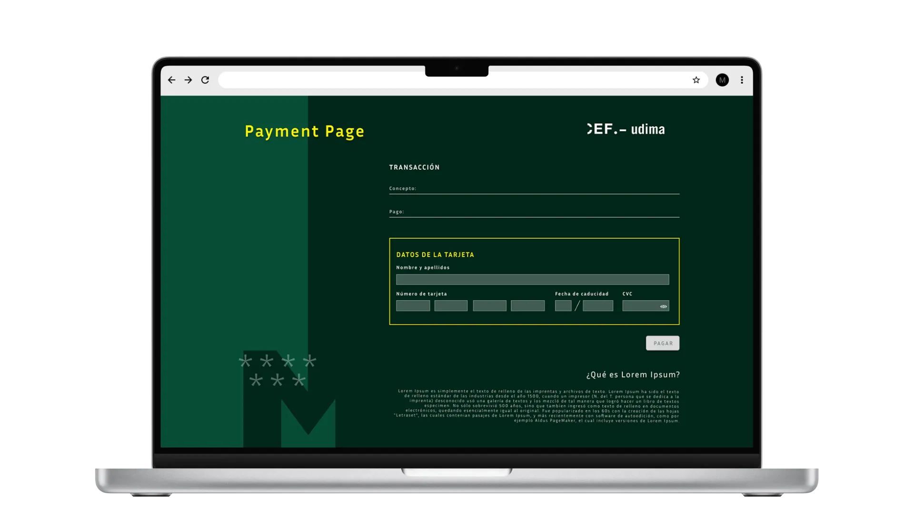
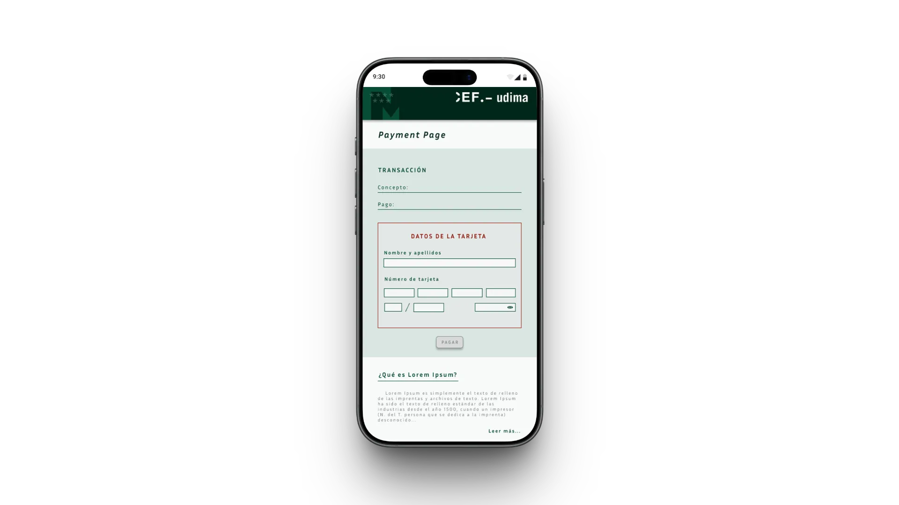

CEF Design System
y accesibilidad EdTech
- Auditoría heurística y triage de deuda
- Tokens y paleta conforme WCAG AA
- UI Kit en Figma con variantes y estados
Transparencia (NDA) y Recreación con IA
El diseño original de CEF es confidencial. Para demostrar mi criterio técnico, he realizado una recreación completa desde cero de una marca ficticia (Aulora) mediante flujos de IA Generativa en 2026. Este caso es de mi autoría exclusiva y no revela información protegida.
Ahorro de tiempo del 90%: Un proceso manual de meses en 2024 fue recreado y auditado en pocos días utilizando mi playbook de Figma + Claude MCP y vibe coding.
Dirección Humana: La IA acelera la producción, pero el criterio (WCAG 2.1 AA, consistencia y lógica de negocio) es humano. He diseñado flujos que unen tokens, Figma y código.
Transparency (NDA) & AI Recreation
CEF's original design is confidential. To demonstrate my workflow, I have built a complete recreation from scratch under a fictional brand (Aulora) using 2026 Generative AI pipelines. This project is entirely my own and free of client data.
90% Efficiency Gain: Months of manual work in 2024 were audited and scaled in just days using my Figma + Claude MCP playbook and vibe coding workflows.
Human Direction: AI accelerates speed, but judgment (WCAG 2.1 AA, design logic) remains mine. I have evolved from static layouts to directing intelligent agents bridging Figma and code.
1. Fundaciones & Tokens
1. Foundations & Tokens
Cadena de alias primitivo → semántico → componente con modos claro/oscuro. Cada color, radio y borde está enlazado a una variable: nada hardcodeado.
Primitive → semantic → component alias chain with light/dark modes. Every color, radius and border is bound to a variable: nothing hardcoded.
2. Componentes & Evidencia WCAG
2. Components & WCAG Evidence
17 componentes con ficha de especificación (variantes, 6 estados, tamaños táctiles) y accesibilidad citando el criterio WCAG exacto — el badge AA con pruebas, no solo etiqueta.
17 components with spec sheets (variants, 6 states, touch sizes) and accessibility citing the exact WCAG criterion — the AA badge backed by evidence, not just a label.
3. IA en producto
3. AI in Product
6 patrones de IA documentados (asistente, streaming, incertidumbre, fuentes, feedback, error), un caso end-to-end de feature con IA y la página "Cómo opero el sistema".
6 documented AI patterns (assistant, streaming, uncertainty, sources, feedback, error), an end-to-end AI feature case and the "How I operate the system" page.
Primer design system
de la institución
Responsabilidades directas
- Auditoría heurística completa del ecosistema digital de CEF: identificación y triage de deuda de UX y accesibilidad
- Definición de estándares de accesibilidad WCAG AA: paleta, tipografía y componentes interactivos
- Diseño de arquitectura de componentes: desde wireframes de baja fidelidad hasta UI Kit en Figma con tokens, variantes y estados
- Documentación de comportamiento de componentes para handoff y adopción por parte del equipo de desarrollo
- Aplicación y validación del sistema en módulos críticos: calendario académico, pasarela de pago, login y bolsa de empleo
Con quién colaboré
- Equipo de desarrollo frontend: implementación de componentes, validación de tokens en código y adopción del sistema como referencia única
- Stakeholders internos de CEF: validación de flujos críticos y priorización de módulos por impacto en el journey del estudiante
- Dirección: aprobación del enfoque sistemático frente a un rediseño visual tradicional
No existía un design system previo en la institución. Tampoco había tokens, nomenclatura compartida ni guía de accesibilidad. Este proyecto definió la infraestructura de diseño desde cero.
Múltiples entornos digitales,
sin criterio unificado
El ecosistema digital de CEF arrastraba años de deuda técnica y de diseño, con módulos independientes y patrones incompatibles. Esto triplicaba el tiempo de desarrollo, generaba discrepancias entre diseño y código, y fragmentaba la experiencia de los estudiantes.
- Carga cognitiva extrema por interfaces densas y sobrepobladas.
- Patrones de interacción inconsistentes entre diferentes módulos.
- Bloqueos de accesibilidad graves (contraste, tipografía) inaceptables para una institución educativa.
Rediseño, unificación y
cumplimiento WCAG
El objetivo era auditar la plataforma, establecer estándares de accesibilidad innegociables (WCAG AA) y estructurar el primer Sistema de Diseño escalable para todo el entorno EdTech.
Como los colores de marca no cumplían el ratio WCAG 4.5:1, redefiní la paleta y prioricé los módulos de alta fricción (calendario y login) para realizar la primera validación del sistema.
Auditoría, Wireframing
y unificación de la UI
Auditoría UX y triage de problemas
Definición de estilos y accesibilidad (WCAG)
Requisito innegociable en EdTech: nueva paleta corporativa con contraste mínimo Nivel AA, tipografía legible y sistema de componentes básicos estandarizado.
Cinco decisiones, en orden
3. Arquitectura y Diseño Visual de la Herramienta de Calendario
El Calendario Académico no es una simple landing corporativa; es la herramienta interactiva principal que el estudiante consulta a diario para gestionar su actividad formativa. Diseñamos este módulo desde el flujo lógico y los wireframes hasta la UI de alta fidelidad, estresando y validando la escalabilidad del nuevo sistema de componentes.
Estructura lógica (Wireframe)
Traspasé el foco de "diseñar pantallas" a "diseñar sistemas". Creamos wireframes de baja fidelidad para resolver la jerarquía del layout base (Navegación, Contenedores, Formularios) antes de inyectar la capa visual. Esto asegura que la lógica funcional esté validada antes de definir colores y tipografías.
Layout base: Distribución clara de contenedores, formularios y paneles de navegación principal.
Contenedores de eventos: Espaciado predecible para las asignaturas y fechas clave del alumno.
/WIREFRAME/wireframe-calendar.webp)
Diseño Final: Desktop vs. Mobile
Aplicamos los tokens del nuevo UI Kit centralizado en Figma sobre la estructura lógica validada, logrando una interfaz limpia y de alta accesibilidad, consistente en escritorio y pantallas móviles.
/calendariooo.webp)
La versión móvil reorganiza la agenda en una vista de lista y cuadrícula mensual adaptada para interacción táctil en smartphone, garantizando legibilidad y accesibilidad.
Adaptabilidad responsive: Redefinición de cuadrícula y botones flotantes para optimizar el espacio en pantallas verticales.
/calendario.webp)
La versión de escritorio del calendario académico permite al estudiante visualizar de un vistazo su agenda académica diaria y semanal, facilitando la interacción rápida con asignaturas y filtros avanzados.
Consistencia visual: Sincronización al 100% con los componentes interactivos del design system y colores de contraste AA (WCAG).
4. Pasarela de Pago: Rediseño del Checkout Responsive
El checkout de matrícula es un flujo crítico donde la fricción se traduce directamente en pérdida de ingresos. Aplicamos el sistema de componentes para rediseñar la pasarela de pago, optimizando la jerarquía visual de los conceptos económicos y estructurando una experiencia adaptativa fluida tanto en desktop como en dispositivos móviles.

En resoluciones de escritorio, el checkout divide la pantalla de forma equilibrada para mostrar en paralelo el desglose transaccional detallado (conceptos de matrícula, descuentos, tasas) y las opciones de pago (tarjeta, financiación, domiciliación).
Estructura en dos columnas: Resumen financiero fijo a la derecha y formulario interactivo de pago a la izquierda.

La versión móvil reorganiza los bloques verticalmente y prioriza el paso de pago activo, reduciendo la altura de scroll requerida para completar la transacción. Los campos de formulario y botones de llamada a la acción adoptan tamaños óptimos para interacción táctil.
Reducción de ruido: Elementos de desglose colapsados en un acordeón resumen al inicio para enfocar la pantalla en los datos de cobro.
5. Login, Landing y Bolsa de Empleo: Portal del Alumno
El portal de acceso y la Bolsa de Empleo unifican la experiencia del estudiante tanto para ingresar a la plataforma como para buscar oportunidades profesionales. Estandarizamos este módulo con las mismas reglas de color y tipografía del Design System, acelerando drásticamente el desarrollo frontend y logrando una presentación de ofertas impecable en todas las pantallas.

El diseño desktop organiza de forma clara las áreas funcionales del portal: acceso directo con credenciales institucionales, listado interactivo de vacantes laborales de la Bolsa de Empleo, y destacados informativos corporativos de CEF.
Reutilización de componentes: Los campos de formulario y las tarjetas de ofertas de empleo se nutren directamente de la librería compartida de Figma.

El layout móvil adapta la visualización priorizando la accesibilidad de las llamadas a la acción primarias y simplificando los bloques informativos de fondo para evitar scroll excesivo en la pantalla táctil.
Coherencia tipográfica: La escala responsive de textos asegura que los títulos de ofertas de empleo y campos de input sigan siendo completamente legibles (relación AA).
6. Handoff y Escalabilidad
El handoff no fue entregar un Figma bien organizado y esperar. Documenté el comportamiento de cada componente (estados, variantes, casos límite) en un formato que el equipo de desarrollo pudiera consumir directamente como referencia de implementación. Eso implica entender cómo se traduce un token de spacing a una variable CSS, cómo se estructura un componente para que sus variantes sean predecibles en código, y dónde está el límite entre lo que se resuelve en diseño y lo que se resuelve en front. Con formación en desarrollo web completo, ese lenguaje no era ajeno; eso acortó ciclos de revisión de forma visible.
Despliegue del Design System en otros módulos clave:
Figma Tokens: Nomenclatura semántica mapeada con variables CSS de desarrollo. Ver archivo en Figma ↗ · Tokens en GitHub ↗
Matriz de Estados: Comportamientos definidos para Default, Hover, Active, Focus, Disabled y Loading.
Guía de Layout: Breakpoints responsive y reglas de comportamiento adaptativo por componente.
Estructura de Tokens y Componentes (CEF UI System)
Tokens de Fundación (Figma Variables)
Valores atómicos globales independientes de contexto: paletas cromáticas primarias/secundarias y escala tipográfica.
Atomic global values independent of context: primary/secondary colors and typography hierarchy scales.
Tokens de Alias (CSS Custom Properties)
Asignación por rol: color de fondo del botón principal (--btn-primary-bg), bordes activos e intensidades de sombreado.
Role-based semantic mapping: main button fill color (--btn-primary-bg), active border tokens, and shadow properties.
Componentes Estructurados
Bloques funcionales básicos: Botón, Input Text, Checkbox y Píldora de estado, configurados con variantes e interactividad en Figma.
Core functional assets: Button, Input, Checkbox, and Badges configured with states and variants inside Figma library.
Módulos EdTech Reutilizables
Componentes compuestos formados por átomos: Buscador de Cursos, Calendario de Clases y Formulario de Registro.
Composite patterns composed of atoms: Course Finder search bar, Calendar Widget, and Registration Form.
El sistema,
no la captura del sistema
Todo lo que sigue está construido con los mismos tokens semánticos que documenté para CEF/Aulora — no son imágenes. Un único set de alias resuelve claro y oscuro sin tocar un solo componente, y cada valor cita el criterio WCAG que cumple. Es la diferencia entre decir que tengo un design system y enseñarlo.
01 · Cadena de tokens — primitivo → semántico → componente
Valores crudos. Nunca se usan directamente en un componente.
Un rol, dos valores según el modo. Aquí vive el claro/oscuro, no en el componente.
El componente solo conoce el alias. Cambiar de modo — o de marca — no lo toca.
02 · El mismo componente, un solo set de tokens, dos modos
Máster en Dirección Financiera
Plazas abiertas · convocatoria de octubre. Financiación en 10 meses sin intereses.
Máster en Dirección Financiera
Plazas abiertas · convocatoria de octubre. Financiación en 10 meses sin intereses.
| Rol semántico | Claro | Contraste | Oscuro | Contraste |
|---|---|---|---|---|
| --c-text | #000000 | 21:1 AAA | #ffffff | 9.9:1 AAA |
| --c-text-muted | #5F6B6C | 5.5:1 AA | #BDC3C7 | 5.6:1 AA |
| --c-action | #004D35 | 9.9:1 AAA · texto blanco | #FAF000 | 13.5:1 AAA · texto verde-600 |
| --c-danger | #b91c1c | 6.5:1 AA | #f87171 | 6.5:1 AA |
| --c-success | #15803d | 5.0:1 AA | #4ade80 | 10.3:1 AAA |
Ratios calculados sobre cada superficie real (texto sobre --c-surface). Todos ≥ 4.5:1 → WCAG 2.1 AA; la mayoría alcanza AAA.
03 · Un componente = todos sus estados (no solo el "bonito")
Claridad visual y
escalabilidad técnica
Deuda de diseño eliminada: Interfaz coherente y estandarizada en todo el journey del estudiante de CEF.
Accesibilidad certificada: Superación del ratio 4.5:1 de contraste en todos los componentes interactivos.
Time-to-market reducido: El equipo frontend ensambla vistas usando componentes predefinidos sin maquetar de cero.
Base escalable: El UI Kit es la base de referencia única para la futura evolución tecnológica de CEF.
El mismo sistema,
recreado con IA en días
En 2024 construí este sistema a mano. En 2026 no puedo compartir aquel archivo —es confidencial—, así que hice algo más útil que enseñar capturas: lo recreé desde cero con IA sobre una marca ficticia, aplicando las metodologías que he incorporado desde entonces. El resultado no es una copia: es la prueba medible de cómo ha evolucionado mi forma de trabajar.
I built this system by hand in 2024. In 2026 I can't share that file —it's confidential—, so I did something more useful than showing screenshots: I recreated it from scratch with AI under a fictional brand, applying the methodologies I've adopted since. The result isn't a copy: it's measurable proof of how my way of working has evolved.
MI PLAYBOOK · FIGMA + CLAUDE (MCP) — Los 4 flujos con los que construí esta recreación — The 4 workflows I used to build this recreation
Diseñar con el sistema
Claude conectado a Figma por MCP diseña usando mis variables y componentes reales — nada hardcodeado. El prompt clave: «usa las variables y los componentes que ya tengo en el archivo».
Claude connected to Figma via MCP designs using my real variables and components — nothing hardcoded. The key prompt: "use the variables and components already in the file".
Auditar y corregir
La IA puntúa el sistema de 0 a 100 por categoría (naming, tokens, accesibilidad, consistencia, cobertura), localiza la capa exacta del fallo y aplica la corrección. Este archivo pasó por esa auditoría.
AI scores the system 0–100 per category (naming, tokens, accessibility, consistency, coverage), pinpoints the exact faulty layer and applies the fix. This file went through that audit.
Prototipar en minutos
La IA genera la pantalla en código, la importo a Figma con HTML to Design y vinculo mis tokens. Bases de logins, checkouts y landings listas en minutos, no en días.
AI generates the screen as code, I import it into Figma with HTML to Design and bind my tokens. Login, checkout and landing foundations ready in minutes, not days.
Vibe coding: de Figma a producto
Paso los diseños a Claude Code pidiéndole que interprete el diseño y genere sus propios design tokens y componentes en código. Así las pantallas futuras mantienen la cohesión del sistema. Resultado real: los 57 tokens publicados en GitHub ↗
I hand the designs to Claude Code asking it to interpret the design and generate its own design tokens and components in code. Future screens keep the system's cohesion. Real output: the 57 tokens published on GitHub ↗
Construyo, no solo pintoI build, I don't just paint
De entregar pantallas a entregar sistemas funcionando: pipeline tokens ↔ código ↔ documentación, con la IA generativa produciendo variantes en segundos.
From delivering screens to delivering working systems: a tokens ↔ code ↔ documentation pipeline, with generative AI producing variants in seconds.
Oriento la IA, decido yoI direct the AI, I decide
Uso los LLMs para estructurar research, extraer patrones de entrevistas y criticar mis propias decisiones de diseño. La velocidad es de la IA; el criterio —métricas, leyes de UX, accesibilidad— es mío.
I use LLMs to structure research, extract patterns from interviews and critique my own design decisions. Speed belongs to the AI; judgement —metrics, UX laws, accessibility— is mine.
Conecto diseño, producto y códigoI connect design, product and code
Un solo lenguaje —tokens— compartido entre Figma, código y negocio, y un bucle de mejora continua: medir → detectar fricción → rediseñar con el sistema → publicar.
One shared language —tokens— across Figma, code and business, plus a continuous improvement loop: measure → detect friction → redesign with the system → ship.
✱ La IA no me sustituye: me multiplica. Sin criterio profesional, la IA produce productos generalistas. Este caso es la prueba de lo contrario: mismo sistema, mismo rigor WCAG, una fracción del tiempo.AI doesn't replace me: it multiplies me. Without professional judgement, AI produces generic products. This case proves the opposite: same system, same WCAG rigour, a fraction of the time.
Lo que construir un sistema
desde cero enseña
La adopción es el entregable
El design system no es el entregable. La adopción sí. El objetivo era que desarrollo adoptara el sistema como referencia única, no entregar un archivo de Figma. Eso exigió documentar estados, variantes y comportamientos.
Estructura antes que estética
Empezar por estructura cambia el resultado. Trabajar con wireframes de baja fidelidad antes de inyectar UI evitó resolver problemas de jerarquía con recursos visuales, basando la UI en decisiones funcionales.
La accesibilidad como palanca
La accesibilidad como restricción es palanca. Redefinir la paleta para cumplir WCAG AA no limitó el diseño visual: se argumentó como mejora del sistema, logrando colores versátiles y legibilidad en todo contexto.
Diseñar para el equipo interno
Diseñar sistemas es diseñar para el equipo. El design system es una herramienta interna. Si la biblioteca no es cómoda en Figma y los tokens no son lógicos en código, morirá. Empatizar con desarrollo es ineludible.